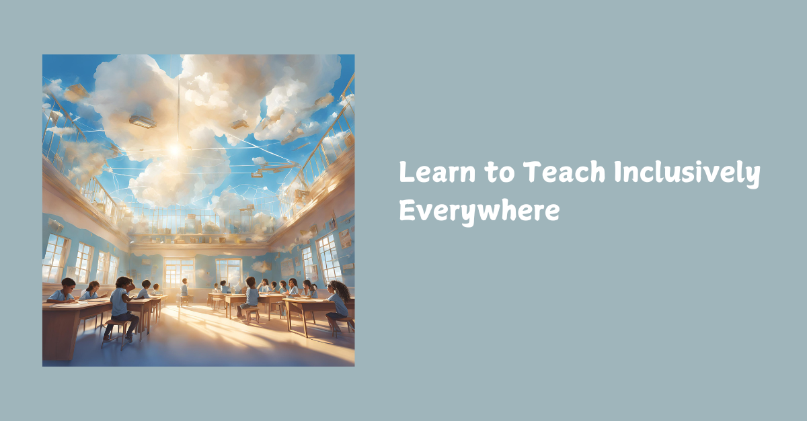

Beyond the Census: Building Schools in the Cloud for Every Child

Last week the Children’s Commissioner published her first School Census—the largest stocktake to date of how schools in England are supporting children, inside and far beyond the classroom [ Euan MacLean wrote about it earlier this week here. ]. The findings are stark and should end any debate about whether “business as usual” is enough.
Nearly 4 in 10 children will need additional support with learning at some point.
1 in 4 will need a social worker during their school years.
Around 1 million children live in destitution.
Over a million miss a day of school every fortnight.
The Commissioner proposes a shift from “special needs” to additional needs, alongside a Unique ID and a shared Children’s Plan platform to coordinate support across services. Sensible moves—but still too often trapped in a deficit lens: catalogue, diagnose, label. What children are asking for is simpler and harder: relationship, coherence, belonging.
Prototypes of the next reform wave: The Haven & Riverside
At The Haven Academy and Riverside Virtual College, we’re not waiting for White Papers. We’re building what the census gestures towards but can’t yet operationalise:
Inclusion by design. Haven starts from trauma-informed, neurodivergent-affirming pedagogy. “Additional needs” aren’t bolt-ons; they’re the baseline.
Relational intelligence, not just Unique IDs. Our learner profiles are living, narrative documents—symbolic and trusted—so support follows the child without flattening them to fields. (When a well-implemented Unique ID exists, we’ll map to it.)
Alternative provision reimagined. Riverside Virtual College shows that “virtual” ≠ isolated. Learners remain held in community—with a clear stance that no child should be excluded to home; there must be a day-one right to alternative provision.
Back to Balance. We retire “falling behind” language. Our rhythms are restorative, designed to bring learners back into coherence with learning and with themselves.
How we build schools in the cloud (that actually work)
Some things we've launched this week at The Haven: One spine across subjects. We merged Biology, Chemistry and Physics into a Combined Science Canvas course so learners meet one doorway, not three. English seeded the term’s themes—Creatures, Worlds, Power—and Maths/Science echo them in prompts and discussions. Coherence beats chaos.
A 5-week cadence learners can trust.
Weeks 1–2: orient and practise (low-stakes uploads to build platform fluency).
Week 3: anonymous peer-assessed submission.
Week 4: peer feedback + revision.
Week 5: summative piece plus metacognitive reflection.
This cadence is powered by SOLO taxonomy (surface → deep → extended abstraction), which pairs cleanly with AI drafting and critique. Teachers keep the professional judgement; AI accelerates the first pass.
Rubrics, to-dos, zero faff. Reusable Haven Success Rubrics attach across courses. Dates trigger Canvas to-dos automatically. Educators expand prompts live; Canvas holds the spine.
Accessibility as default. We use Canvas’ accessibility checker, readable structure, alt text, and read-aloud compatibility. It’s not a bolt-on; it’s baseline.
Data ethics where it matters. We announce and consent to any transcription/recording, store artefacts in approved drives, and never allow ambient model-training on classroom data. The cloud isn’t a void; it’s a governed space.
Why this matters now
The census is crystal clear: brilliant teaching is necessary but not sufficient. Challenges beyond the classroom—housing instability, mental health, parental imprisonment—place a glass ceiling on what pupils can achieve unless wider services are joined up and accountable. That’s the spirit of the Unique ID and Children’s Plan; we go further by designing daily learning to be relational and predictable so children can actually re-enter learning.
If we reduce children to datasets, we widen the gap between what they live and what we measure. If we build schools in the cloud that are relational, coherent, and inclusive by design, we create provision where no child has to prove they are broken to be held.
That is the promise Haven and Riverside are carrying.
From prototype to playbook: adoptable now
In collaboration with experts who've lived and breathed this for decades, we’ve packaged the model at the Novus Learning Network so any school can implement rapidly:
Cloud Course Kit (Canvas shells for English/Maths/Combined Science) with the 5-week cadence, reusable rubrics, cross-curricular prompts, accessibility baked in.
Private teacher videos and simulations embedded where they serve the task, not as homework dumping-grounds.
Partner-scoped AI assistants (no data bleed) tuned to your lexicon, policies and assessment.
Implementation sprint (1 day) to set up, localise for your exam board (Edexcel/AQA), and train staff.
This is grown-up work—resourcing must match need, just as the census warns. Funding and capacity are the top barriers schools cite. We price accordingly and deliver accordingly.
Any and every school or learning community can have their own school in the cloud.
The bigger picture
The Commissioner calls for the next great reform wave to focus on those who’ve been failed. Agreed. But reform can’t only be platforms and IDs. It must be symbolic coherence—the day-to-day structures that restore belonging and build the muscle of learning. That’s what our cadence, profiles, and relational design deliver in practice.
This is what Building Schools in the Cloud means: not escape from reality, but meeting it—complex, fractured, charged—and creating structures where every child can attend, engage, attain, and excel without losing themselves.
The census shows the cracks. Haven and Riverside are showing the blueprint.
Join the work
I’ll be exploring this with local authorities and educators in upcoming sessions - our first open meet is this Friday for members. If you’re serious about coherent, inclusive, future-proof provision, members can:
Book a 30-minute live demo (we’ll walk you through a Canvas shell).
Pick one cohort to pilot for 5 weeks.
Let’s set up your Cloud Course Kit and run the first cycle together.
Reply to this newsletter or connect with me on LinkedIn. Bring your constraints; we’ll bring coherence.
Meet the people who can walk this beside you on our website here: https://buildingschoolsinthecloud.com/
If you’re even thinking of building any online provision — full school, SEND hub, hybrid model, or just a single course — this is where you need to be.💡 We’ve done it. We know what works. Come join us here
#TraumaInformed #SOLOTaxonomy #Verseality #AIinEducation #DataEthics #Safeguarding #CanvasLMS Pencil Spaces #HavenAcademy #RiversideVirtualCollege #BeyondPhysicalWalls
First published in Building Schools in the Cloud on LinkedIn, 10 September 2025.